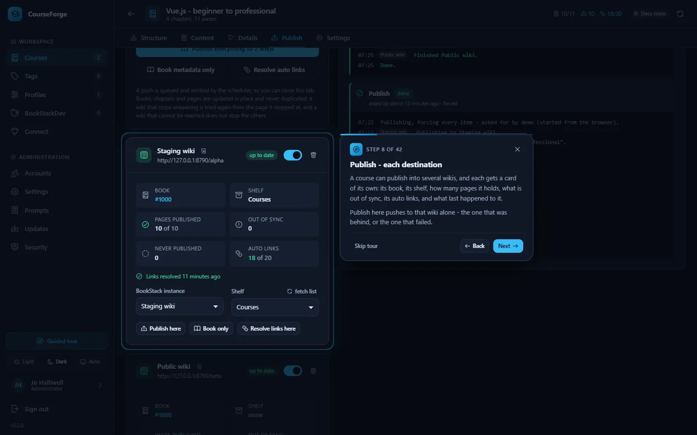

Get started
Finding your way around
The sidebar, the guided tour, themes, your account and the keyboard.
CourseForge is a single-page application: one window, a sidebar on the left and the screen you are working on beside it.

The sidebar#
The Workspace group is what everybody uses:
| Entry | What it is for |
|---|---|
| Courses | Every course you can see, with how far it has got, which profile writes it and how many wikis it publishes to. An administrator sees every account's courses, each marked with its owner. |
| Tags | The reusable tag library. See Tags. |
| Profiles | AI accounts, BookStack instances, models, language, content defaults and prompt overrides. See Profiles. |
| BookStackDev | Looks: how your wikis render code, diagrams and formulas. See BookStackDev. |
| Connect | Tokens for AI clients that connect over MCP. See Connect an AI client. |
An administrator also has an Administration group: Accounts, Settings, Prompts, Updates and Security. A normal account never sees it, and the server refuses those routes to it regardless.
At the foot of the sidebar are the Guided tour button, the theme switch, your account and Sign out. The same glyph marks the same thing everywhere in the application: the book is always a course, the sliders are always a profile, the plug is always a connection.
The course workspace#
Opening a course shows five tabs:
| Tab | What happens there |
|---|---|
| Structure | The outline: design it with the AI, edit it, plan page scopes, apply it. The outline |
| Content | Write, generate, review and edit pages; start runs. Writing pages |
| Details | What every page is made of, and the research briefing. Content details |
| Publish | Where the course goes, pushing it there, and the publish log. Publishing |
| Settings | Name, course prompt, profile, AI tagging, course tags, punctuation and deleting the course. |
Leaving a screen with unsaved work - a page you edited, an outline you changed but did not apply, a destination list you did not save - asks first, whether you leave by the sidebar, the back arrow or by closing the browser tab.
The guided tour#
The first time an account signs in, a tour starts by itself: the screen dims and one thing at a time is lit up, with a card explaining what it is for. It covers every screen and, for an administrator, every group of settings - forty-odd steps. A normal account gets a shorter tour without the administration screens.


Skip it with Skip tour or Esc, step through it with the arrow keys, and open it again whenever you like with Guided tour above the theme switch. It is offered automatically only once per account.
Themes#
Three choices at the foot of the sidebar: Light, Dark and Auto, which follows the operating system and keeps following it. CourseForge opens in the dark theme. The editor, the code highlighting and the diagrams follow the theme without reloading.
Your account#
The account entry at the bottom of the sidebar is where you change your display name - the name shown against everything you create - and your password. A password needs at least ten characters and must differ from the old one.
Your user name cannot be changed, by you or by an administrator: it is the key every row you own is filed under. A new name means a new account and a transfer.
An account whose password was set by an administrator is asked to choose its own at first sign-in. Five failed sign-ins lock the address out for fifteen minutes (both numbers are settings).
The security banner#
Until Administration › Security has passed, every field that would store a secret is greyed out with a red mark, and an administrator sees a banner at the top of every screen explaining why. Click it to open the Security screen. See Security.
Keyboard#
| Keys | Where | Does |
|---|---|---|
Tab on a fresh page |
everywhere | offers a skip link past the navigation |
Ctrl S |
Content tab | saves the page |
Ctrl F |
any editor | find |
Ctrl Z / Ctrl Y |
any editor | undo / redo, per page |
Tab |
any editor | indents |
Esc, ←, → |
the tour | skip, back, next |
Narrow screens#
Below 1024 px the sidebar collapses into a drawer behind the ☰ button. On the Content tab, the inspector becomes a slide-over below 1280 px, and the Structure tab's AI panel becomes a drawer behind the sparkle button.